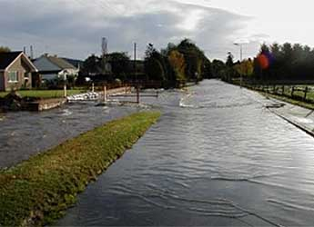

|
NRCS |
The Center is the technical lead for the Snow Survey and Water Supply Forecasting Program, the NRCS national Soil Climate Analysis Network (SCAN), and a large number of water and climate activities. These include providing data for conservation, tools for assessing water supplies and climate, and resources for addressing questions on local and regional conditions, drought and climate trends. Please click on the link for further information NRCS |
 |
Drought Monitor |
The U.S. Drought Monitor (USDM) is a map that shows the location and intensity of drought across the country. The data is updated each Tuesday and released on Thursday. Please click on the link for further information Drought Monitor |
 |
Ground Water |
A natural consequence of groundwater withdrawals is the removal of water from subsurface storage, but the overall rates and magnitude of groundwater depletion in the United States are not well characterized. This study evaluates long-term cumulative depletion volumes in 40 separate aquifers or areas and one land use category in the United States, bringing together information from the literature and from new analyses. Please click on the link for further information Ground Water |
|  |
USGS Flood Innundation |
The USGS Flood Inundation Mapping (FIM) Program helps communities protect lives and property by providing tools and information to help them understand their local flood risks and make cost-effective mitigation decisions. Please click on the link for further information USGS Flood Innundation |
 |
ICLUS |
The Global Climate Explorer (GCX) Integrated Climate and Land-Use Scenarios (ICLUS) Tool was developed to produce spatially explicit projections of population and land-use that are based on the Intergovernmental Panel on Climate Change’s (IPCC) Special Report on Emissions Scenarios (SRES). Please click on the link for further information ICLUS |